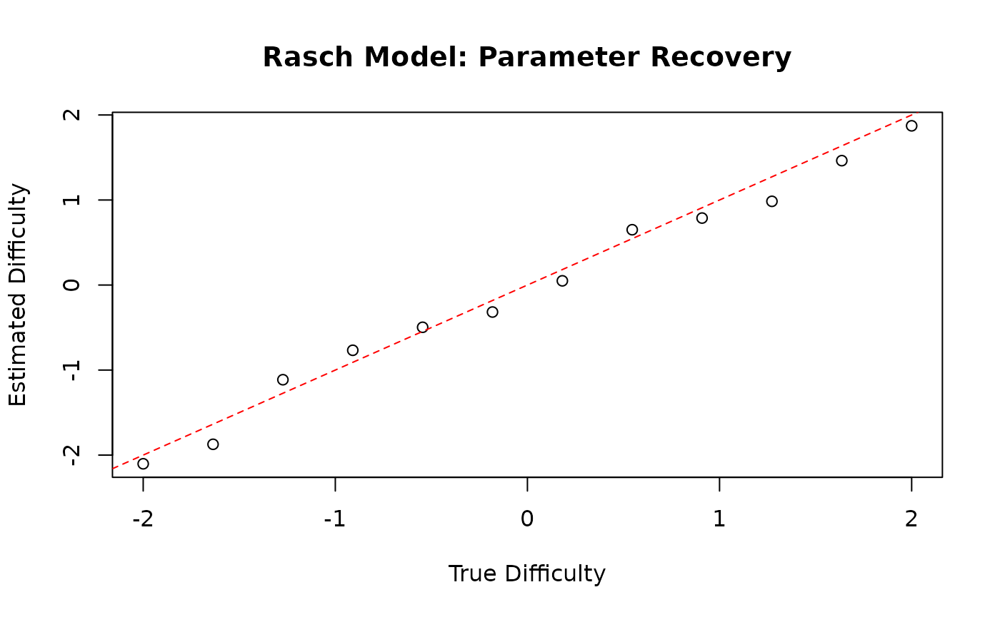
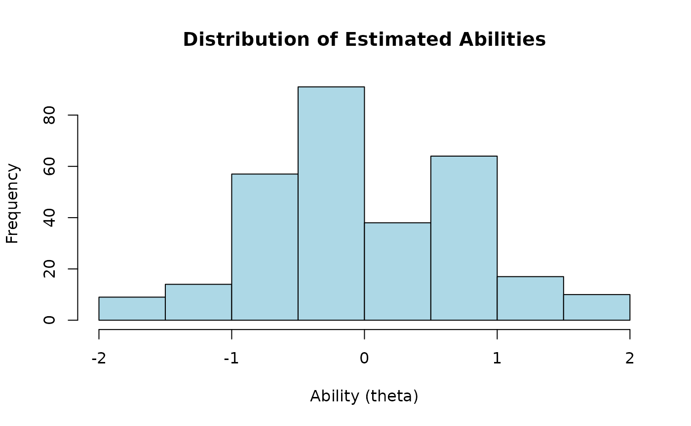
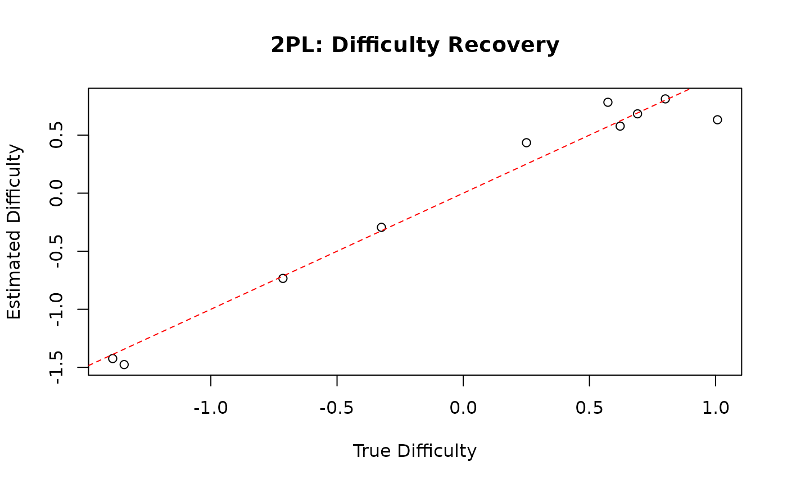
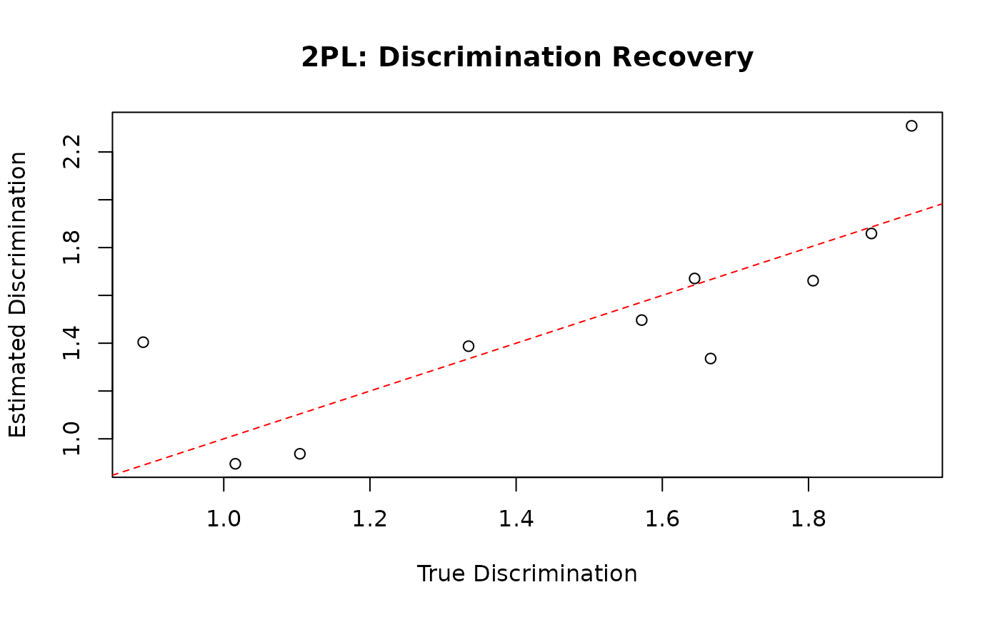
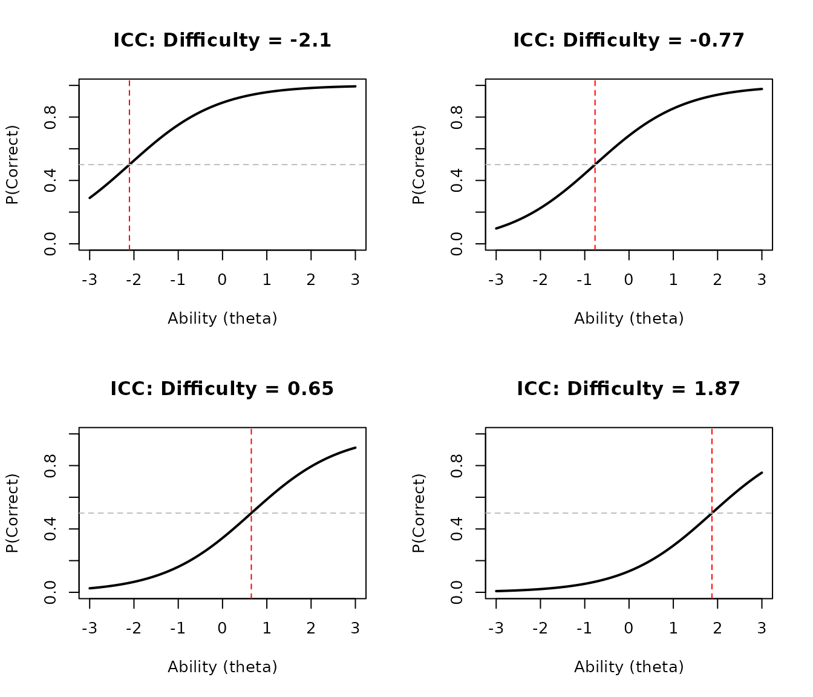
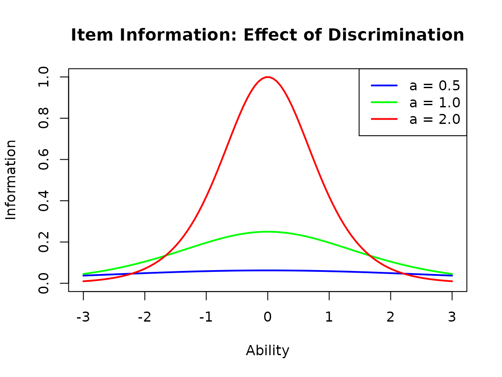
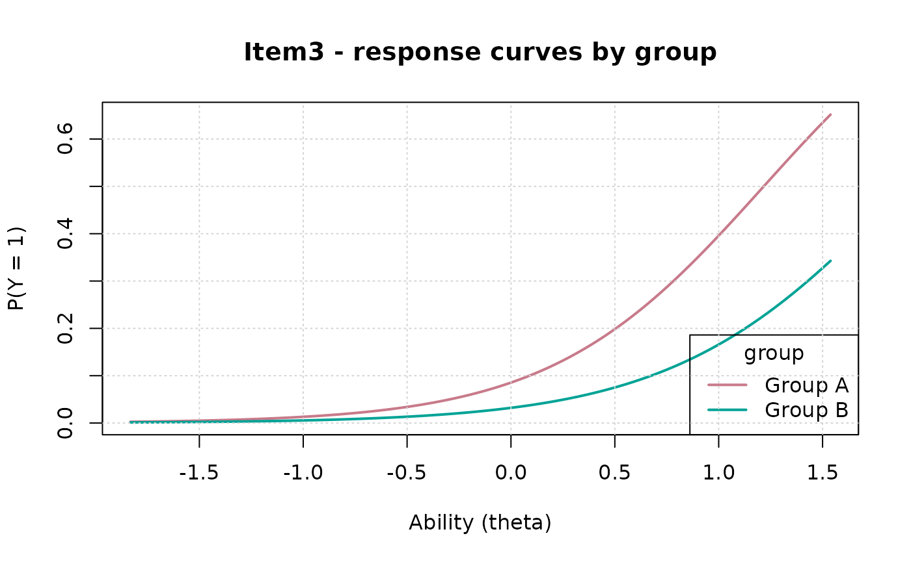

Item Response Theory Models with gllammr
gllammr Team
2026-07-11
Source:vignettes/irt-models.Rmd
irt-models.RmdIntroduction to IRT
Item Response Theory (IRT) provides a framework for analyzing test and survey data. IRT models relate person abilities (latent traits) to item responses through mathematical functions.
gllammr implements the major IRT models:
- Dichotomous: Rasch (1PL), 2PL, 3PL
- Polytomous: Graded Response Model (GRM), Partial Credit Model (PCM), Generalized Partial Credit Model (GPCM), Nominal Response Model (NRM)
plus differential item functioning (DIF) analysis and explanatory IRT (EIRT) with item covariates.
Identification note: for the Rasch model the latent ability variance is estimated; for 2PL/3PL and the polytomous models the latent variance is fixed at 1 so that item discriminations are identified.
The Rasch Model
The Rasch model is the simplest IRT model:
where:
- is the ability of person
- is the difficulty of item
Simulating Rasch Data
library(gllammr)
#>
#> Attaching package: 'gllammr'
#> The following object is masked from 'package:stats':
#>
#> binomial
set.seed(123)
n_persons <- 300
n_items <- 12
# True parameters
true_ability <- rnorm(n_persons, mean = 0, sd = 1)
true_difficulty <- seq(-2, 2, length.out = n_items)
# Generate responses
responses <- matrix(NA, n_persons, n_items)
for (j in 1:n_items) {
p <- plogis(true_ability - true_difficulty[j])
responses[, j] <- rbinom(n_persons, 1, p)
}
colnames(responses) <- paste0("Item", 1:n_items)
head(responses)
#> Item1 Item2 Item3 Item4 Item5 Item6 Item7 Item8 Item9 Item10 Item11 Item12
#> [1,] 1 0 0 0 0 1 1 0 0 0 0 0
#> [2,] 1 1 0 0 0 0 1 1 1 0 0 0
#> [3,] 1 1 1 1 1 1 1 1 1 1 0 1
#> [4,] 1 1 1 1 0 0 1 1 0 0 0 0
#> [5,] 1 1 1 1 1 0 1 0 0 1 0 0
#> [6,] 1 1 0 1 1 1 1 0 1 1 0 0Fitting the Rasch Model
fit_rasch <- fit_irt(responses, model = "Rasch")
print(fit_rasch)
#> IRT Model (Rasch)
#>
#> Number of persons: 300
#> Number of items: 12
#> Model type: Dichotomous
#>
#> Item parameters:
#> difficulty discrimination guessing
#> Item1 -2.102 1 NA
#> Item2 -1.873 1 NA
#> Item3 -1.114 1 NA
#> Item4 -0.767 1 NA
#> Item5 -0.497 1 NA
#> Item6 -0.317 1 NA
#> Item7 0.049 1 NA
#> Item8 0.650 1 NA
#> Item9 0.788 1 NA
#> Item10 0.984 1 NA
#> Item11 1.463 1 NA
#> Item12 1.872 1 NA
#>
#> Ability distribution:
#> Mean: 0
#> SD: 0.731
#> Estimated SD: 0.928
#>
#> Log-likelihood: -2015.18
#> AIC: 4056.37
#> BIC: 4104.51Examining Item Parameters
# Item difficulties
item_params <- fit_rasch$item_parameters
print(item_params)
#> difficulty discrimination guessing
#> Item1 -2.10227820 1 NA
#> Item2 -1.87298567 1 NA
#> Item3 -1.11360559 1 NA
#> Item4 -0.76734192 1 NA
#> Item5 -0.49674303 1 NA
#> Item6 -0.31740396 1 NA
#> Item7 0.04946506 1 NA
#> Item8 0.65032480 1 NA
#> Item9 0.78767957 1 NA
#> Item10 0.98441837 1 NA
#> Item11 1.46285886 1 NA
#> Item12 1.87246809 1 NA
# Plot item difficulties
plot(true_difficulty, item_params$difficulty,
xlab = "True Difficulty",
ylab = "Estimated Difficulty",
main = "Rasch Model: Parameter Recovery")
abline(0, 1, col = "red", lty = 2)
Examining Person Parameters
# Person abilities (empirical Bayes estimates)
abilities_rasch <- fit_rasch$person_abilities
# Distribution of abilities
hist(abilities_rasch, main = "Distribution of Estimated Abilities",
xlab = "Ability (theta)", col = "lightblue")
# Correlation with true abilities
cor(abilities_rasch, true_ability)
#> [1] 0.7728665The 2PL Model
The 2-parameter logistic model adds item discrimination:
where is the discrimination parameter for item : higher means the item better distinguishes between ability levels.
Simulating 2PL Data
set.seed(456)
n_items_2pl <- 10
true_difficulty_2pl <- rnorm(n_items_2pl, 0, 1)
true_discrimination <- runif(n_items_2pl, 0.8, 2.0)
responses_2pl <- matrix(NA, n_persons, n_items_2pl)
for (j in 1:n_items_2pl) {
p <- plogis(true_discrimination[j] * (true_ability - true_difficulty_2pl[j]))
responses_2pl[, j] <- rbinom(n_persons, 1, p)
}
colnames(responses_2pl) <- paste0("Q", 1:n_items_2pl)Fitting the 2PL Model
fit_2pl <- fit_irt(responses_2pl, model = "2PL")
print(fit_2pl)
#> IRT Model (2PL)
#>
#> Number of persons: 300
#> Number of items: 10
#> Model type: Dichotomous
#>
#> Item parameters:
#> difficulty discrimination guessing
#> Item1 -1.476 0.896 NA
#> Item2 0.577 1.336 NA
#> Item3 0.812 1.859 NA
#> Item4 -1.424 1.387 NA
#> Item5 -0.734 1.662 NA
#> Item6 -0.294 1.671 NA
#> Item7 0.683 2.309 NA
#> Item8 0.434 1.497 NA
#> Item9 0.632 1.404 NA
#> Item10 0.783 0.937 NA
#>
#> Ability distribution:
#> Mean: 0.012
#> SD: 0.835
#> Estimated SD: 1
#>
#> Log-likelihood: -1629.9
#> AIC: 3299.81
#> BIC: 3373.88
summary(fit_2pl)
#> IRT Model (2PL)
#>
#> Number of persons: 300
#> Number of items: 10
#> Model type: Dichotomous
#>
#> Item parameters:
#> difficulty discrimination guessing
#> Item1 -1.476 0.896 NA
#> Item2 0.577 1.336 NA
#> Item3 0.812 1.859 NA
#> Item4 -1.424 1.387 NA
#> Item5 -0.734 1.662 NA
#> Item6 -0.294 1.671 NA
#> Item7 0.683 2.309 NA
#> Item8 0.434 1.497 NA
#> Item9 0.632 1.404 NA
#> Item10 0.783 0.937 NA
#>
#> Ability distribution:
#> Mean: 0.012
#> SD: 0.835
#> Estimated SD: 1
#>
#> Log-likelihood: -1629.9
#> AIC: 3299.81
#> BIC: 3373.88
#>
#> Ability quartiles:
#> 0% 25% 50% 75% 100%
#> -1.68865676 -0.55753582 0.03603969 0.56226592 1.67711858Comparing Item Parameters
difficulty_2pl <- fit_2pl$item_parameters$difficulty
discrimination_2pl <- fit_2pl$item_parameters$discrimination
plot(true_difficulty_2pl, difficulty_2pl,
xlab = "True Difficulty", ylab = "Estimated Difficulty",
main = "2PL: Difficulty Recovery")
abline(0, 1, col = "red", lty = 2)
plot(true_discrimination, discrimination_2pl,
xlab = "True Discrimination", ylab = "Estimated Discrimination",
main = "2PL: Discrimination Recovery")
abline(0, 1, col = "red", lty = 2)
The 3PL Model
The 3-parameter logistic model adds a guessing parameter:
where is the pseudo-guessing parameter (lower asymptote). Note that 3PL guessing parameters are weakly identified in small samples; large datasets are recommended in practice.
set.seed(789)
true_guessing <- runif(n_items_2pl, 0.1, 0.3)
responses_3pl <- matrix(NA, n_persons, n_items_2pl)
for (j in 1:n_items_2pl) {
p <- true_guessing[j] + (1 - true_guessing[j]) *
plogis(true_discrimination[j] * (true_ability - true_difficulty_2pl[j]))
responses_3pl[, j] <- rbinom(n_persons, 1, p)
}
fit_3pl <- fit_irt(responses_3pl, model = "3PL")
#> Warning in sqrt(diag(cov)): NaNs produced
#> Warning: Hessian not positive definite for IRT model; standard errors are
#> unreliable. The model may be over-parameterized or a variance component may be
#> near zero.
print(fit_3pl)
#> IRT Model (3PL)
#>
#> Number of persons: 300
#> Number of items: 10
#> Model type: Dichotomous
#>
#> Item parameters:
#> difficulty discrimination guessing
#> Item1 -1.837 0.919 0.001
#> Item2 0.349 0.912 0.001
#> Item3 0.547 1.242 0.001
#> Item4 -1.731 1.130 0.001
#> Item5 -1.209 1.563 0.001
#> Item6 -0.462 1.532 0.001
#> Item7 0.639 1.628 0.228
#> Item8 -0.014 1.589 0.001
#> Item9 1.402 2.135 0.319
#> Item10 0.882 2.169 0.362
#>
#> Ability distribution:
#> Mean: 0.02
#> SD: 0.826
#> Estimated SD: 1
#>
#> Log-likelihood: -1745.81
#> AIC: 3551.63
#> BIC: 3662.74Item Characteristic Curves
The plot() method draws item characteristic curves,
item/test information, and the ability distribution; here we draw a
Rasch ICC by hand:
plot_icc_rasch <- function(difficulty, theta_range = c(-3, 3)) {
theta <- seq(theta_range[1], theta_range[2], length.out = 100)
p <- plogis(theta - difficulty)
plot(theta, p, type = "l", lwd = 2,
xlab = "Ability (theta)",
ylab = "P(Correct)",
main = paste("ICC: Difficulty =", round(difficulty, 2)),
ylim = c(0, 1))
abline(h = 0.5, col = "gray", lty = 2)
abline(v = difficulty, col = "red", lty = 2)
}
oldpar <- par(mfrow = c(2, 2))
plot_icc_rasch(item_params$difficulty[1])
plot_icc_rasch(item_params$difficulty[4])
plot_icc_rasch(item_params$difficulty[8])
plot_icc_rasch(item_params$difficulty[12])
par(oldpar)Item Information Functions
item_information_2pl <- function(theta, a, b) {
p <- plogis(a * (theta - b))
a^2 * p * (1 - p)
}
theta_grid <- seq(-3, 3, length.out = 100)
plot(theta_grid, item_information_2pl(theta_grid, a = 0.5, b = 0),
type = "l", lwd = 2, col = "blue",
xlab = "Ability", ylab = "Information",
main = "Item Information: Effect of Discrimination",
ylim = c(0, 1))
lines(theta_grid, item_information_2pl(theta_grid, a = 1.0, b = 0),
lwd = 2, col = "green")
lines(theta_grid, item_information_2pl(theta_grid, a = 2.0, b = 0),
lwd = 2, col = "red")
legend("topright",
legend = c("a = 0.5", "a = 1.0", "a = 2.0"),
col = c("blue", "green", "red"),
lwd = 2)
Model Comparison
Models fitted to the same data can be compared with information criteria. Here we fit both Rasch and 2PL to the 2PL data:
fit_rasch_on_2pl <- fit_irt(responses_2pl, model = "Rasch")
comparison <- data.frame(
Model = c("Rasch", "2PL"),
LogLik = c(fit_rasch_on_2pl$logLik, fit_2pl$logLik),
AIC = c(fit_rasch_on_2pl$AIC, fit_2pl$AIC),
BIC = c(fit_rasch_on_2pl$BIC, fit_2pl$BIC)
)
print(comparison)
#> Model LogLik AIC BIC
#> 1 Rasch -1641.048 3304.096 3344.837
#> 2 2PL -1629.903 3299.806 3373.882
# Lower AIC/BIC is better; 2PL should fit better here because the
# generating discriminations vary across itemsAbility Estimation
# Create ability score groups
ability_groups <- cut(abilities_rasch,
breaks = quantile(abilities_rasch, c(0, 0.25, 0.5, 0.75, 1)),
include.lowest = TRUE,
labels = c("Low", "Medium-Low", "Medium-High", "High"))
# Average proportion correct by ability group
score_by_group <- tapply(rowMeans(responses), ability_groups, mean)
print(score_by_group)
#> Low Medium-Low Medium-High High
#> 0.2511111 0.4522222 0.5777778 0.7622222Polytomous IRT Models
Graded Response Model (GRM)
The Graded Response Model is used for ordered categorical responses (e.g., Likert scales):
where are ordered thresholds.
Simulating GRM Data
set.seed(123)
n_persons_grm <- 200
n_items_grm <- 8
n_categories <- 4
theta_grm <- rnorm(n_persons_grm, 0, 1)
discrimination_grm <- runif(n_items_grm, 0.8, 2.0)
difficulty_base <- rnorm(n_items_grm, 0, 1)
responses_grm <- matrix(NA, n_persons_grm, n_items_grm)
for (j in 1:n_items_grm) {
# Ordered thresholds centered around the item difficulty
thresholds <- difficulty_base[j] + seq(-1.5, 1.5, length.out = n_categories - 1)
for (i in 1:n_persons_grm) {
# Cumulative probabilities P(Y >= k), k = 2..K
cum <- plogis(discrimination_grm[j] * (theta_grm[i] - thresholds))
# Category probabilities P(Y = k)
probs <- c(1 - cum[1], -diff(cum), cum[n_categories - 1])
responses_grm[i, j] <- sample(1:n_categories, 1, prob = probs)
}
}
# View response distribution for the first item
table(responses_grm[, 1])
#>
#> 1 2 3 4
#> 8 68 82 42Fitting the GRM
fit_grm <- fit_irt(responses_grm, model = "GRM")
print(fit_grm)
#> IRT Model (GRM)
#>
#> Number of persons: 200
#> Number of items: 8
#> Model type: Polytomous (max 4 categories)
#>
#> Item discriminations:
#> Item1 Item2 Item3 Item4 Item5 Item6 Item7 Item8
#> 1.760 1.046 1.790 1.409 1.454 1.362 1.301 1.183
#>
#> Item thresholds (first 5 items):
#> Item 1 : -2.471, -0.448, 1.12
#> Item 2 : -2.19, -0.547, 0.92
#> Item 3 : -2.912, -0.853, 0.638
#> Item 4 : -2.567, -0.539, 0.788
#> Item 5 : 0.18, 1.69, 3.209
#> ... ( 3 more items)
#>
#> Ability distribution:
#> Mean: 0
#> SD: 0.892
#> Estimated SD: 1
#>
#> Log-likelihood: -1829.52
#> AIC: 3723.04
#> BIC: 3828.58
summary(fit_grm)
#> IRT Model (GRM)
#>
#> Number of persons: 200
#> Number of items: 8
#> Model type: Polytomous (max 4 categories)
#>
#> Item discriminations:
#> Item1 Item2 Item3 Item4 Item5 Item6 Item7 Item8
#> 1.760 1.046 1.790 1.409 1.454 1.362 1.301 1.183
#>
#> Item thresholds (first 5 items):
#> Item 1 : -2.471, -0.448, 1.12
#> Item 2 : -2.19, -0.547, 0.92
#> Item 3 : -2.912, -0.853, 0.638
#> Item 4 : -2.567, -0.539, 0.788
#> Item 5 : 0.18, 1.69, 3.209
#> ... ( 3 more items)
#>
#> Ability distribution:
#> Mean: 0
#> SD: 0.892
#> Estimated SD: 1
#>
#> Log-likelihood: -1829.52
#> AIC: 3723.04
#> BIC: 3828.58
#>
#> Ability quartiles:
#> 0% 25% 50% 75% 100%
#> -2.13275663 -0.64407092 -0.04514485 0.47743270 2.21956811Examining GRM Parameters
# Item discriminations
discriminations <- fit_grm$item_parameters$discrimination
print(head(discriminations))
#> Item1 Item2 Item3 Item4 Item5 Item6
#> 1.759859 1.045923 1.790052 1.409422 1.453734 1.361920
# Thresholds (one per category transition)
thresholds <- fit_grm$item_parameters$thresholds
print(thresholds[[1]]) # Thresholds for first item
#> [1] -2.4707446 -0.4480616 1.1202966Partial Credit Model (PCM)
The Partial Credit Model is used for partial credit scoring:
# PCM constrains discrimination = 1 for all items
fit_pcm <- fit_irt(responses_grm, model = "PCM")
print(fit_pcm)
#> IRT Model (PCM)
#>
#> Number of persons: 200
#> Number of items: 8
#> Model type: Polytomous (max 4 categories)
#>
#> Item discriminations:
#> Item1 Item2 Item3 Item4 Item5 Item6 Item7 Item8
#> 1 1 1 1 1 1 1 1
#>
#> Item thresholds (first 5 items):
#> Item 1 : -2.9, -0.373, 1.097
#> Item 2 : -1.392, -0.279, 0.324
#> Item 3 : -3.415, -0.825, 0.525
#> Item 4 : -2.516, -0.262, 0.41
#> Item 5 : 0.504, 1.541, 2.677
#> ... ( 3 more items)
#>
#> Ability distribution:
#> Mean: 0.002
#> SD: 0.8
#> Estimated SD: 0.921
#>
#> Log-likelihood: -1844.18
#> AIC: 3738.37
#> BIC: 3820.82Generalized Partial Credit Model (GPCM)
GPCM extends PCM by allowing item-specific discriminations:
fit_gpcm <- fit_irt(responses_grm, model = "GPCM")
print(fit_gpcm)
#> IRT Model (GPCM)
#>
#> Number of persons: 200
#> Number of items: 8
#> Model type: Polytomous (max 4 categories)
#>
#> Item discriminations:
#> Item1 Item2 Item3 Item4 Item5 Item6 Item7 Item8
#> 1.417 0.612 1.443 0.954 1.061 0.848 0.916 0.662
#>
#> Item thresholds (first 5 items):
#> Item 1 : -2.516, -0.38, 1.036
#> Item 2 : -1.76, -0.325, 0.249
#> Item 3 : -2.924, -0.787, 0.533
#> Item 4 : -2.677, -0.291, 0.449
#> Item 5 : 0.461, 1.581, 2.779
#> ... ( 3 more items)
#>
#> Ability distribution:
#> Mean: 0.001
#> SD: 0.877
#> Estimated SD: 1
#>
#> Log-likelihood: -1834.06
#> AIC: 3732.12
#> BIC: 3837.67Nominal Response Model (NRM)
NRM is for unordered categorical responses (no natural ordering):
# Simulate nominal responses (e.g., multiple choice with plausible distractors)
set.seed(456)
responses_nrm <- matrix(sample(1:4, 200 * 8, replace = TRUE), 200, 8)
fit_nrm <- fit_irt(responses_nrm, model = "NRM")
print(fit_nrm)
#> IRT Model (NRM)
#>
#> Number of persons: 200
#> Number of items: 8
#> Model type: Polytomous (max 4 categories)
#>
#> Item discriminations:
#> Item1 Item2 Item3 Item4 Item5 Item6 Item7 Item8
#> 0.124 0.050 0.050 0.059 0.050 0.050 0.050 10.000
#>
#> Item thresholds (first 5 items):
#> Item 1 : -0.268, 0.464, 1.365
#> Item 2 : 0.001, 0.872, 1.705
#> Item 3 : -0.227, 0.604, 1.367
#> Item 4 : 0.074, 0.81, 1.773
#> Item 5 : 0.208, 1.876, 3.108
#> ... ( 3 more items)
#>
#> Ability distribution:
#> Mean: -0.185
#> SD: 0.392
#> Estimated SD: 1
#>
#> Log-likelihood: -2180.04
#> AIC: 4424.08
#> BIC: 4529.63Comparing Polytomous Models
comparison_poly <- data.frame(
Model = c("GRM", "PCM", "GPCM"),
LogLik = c(fit_grm$logLik, fit_pcm$logLik, fit_gpcm$logLik),
AIC = c(fit_grm$AIC, fit_pcm$AIC, fit_gpcm$AIC),
BIC = c(fit_grm$BIC, fit_pcm$BIC, fit_gpcm$BIC)
)
print(comparison_poly)
#> Model LogLik AIC BIC
#> 1 GRM -1829.519 3723.038 3828.584
#> 2 PCM -1844.183 3738.367 3820.825
#> 3 GPCM -1834.061 3732.122 3837.668
# GRM/GPCM typically fit better than PCM if discriminations vary;
# PCM is more parsimonious (fewer parameters)Differential Item Functioning (DIF)
DIF analysis tests whether items function differently across groups (e.g., gender, ethnicity, language).
- Uniform DIF: item difficulty differs between groups (parallel ICCs)
- Non-uniform DIF: item discrimination differs between groups (non-parallel ICCs)
Simulating Data with DIF
set.seed(789)
n_persons_dif <- 300
n_items_dif <- 12
group <- rep(c("Group A", "Group B"), each = n_persons_dif / 2)
theta_dif <- rnorm(n_persons_dif, 0, 1)
difficulty_dif <- rnorm(n_items_dif, 0, 1)
discrimination_dif <- runif(n_items_dif, 0.8, 2.0)
# Add uniform DIF to items 3, 6, and 9 for Group B
dif_items <- c(3, 6, 9)
dif_amount <- c(0.8, 1.2, -0.6)
responses_dif <- matrix(NA, n_persons_dif, n_items_dif)
for (i in 1:n_persons_dif) {
for (j in 1:n_items_dif) {
diff_effective <- difficulty_dif[j]
if (j %in% dif_items && group[i] == "Group B") {
diff_effective <- diff_effective + dif_amount[which(dif_items == j)]
}
p <- plogis(discrimination_dif[j] * (theta_dif[i] - diff_effective))
responses_dif[i, j] <- rbinom(1, 1, p)
}
}Testing for DIF
dif_result <- dif_test(
responses_dif,
dif = group,
model = "2PL",
purify = TRUE,
alpha = 0.05
)
print(dif_result)
#> Differential Item Functioning (DIF) Analysis
#> ==============================================
#>
#> DIF specification: ~group ( 1 term(s) )
#> Matching: latent (2PL EAP) | Type: both
#> Purification: 3 iteration(s), converged
#> Items tested: 12 | flagged: 3 (alpha = 0.05 )
#>
#> Flagged items:
#> item name chisq df p_value p_adj delta_R2 classification flagged
#> 3 Item3 7.9444 2 0.0188 0.0188 0.0440 B TRUE
#> 6 Item6 43.7753 2 0.0000 0.0000 0.1678 C TRUE
#> 9 Item9 8.8885 2 0.0117 0.0117 0.0577 B TRUEdif_test() uses logistic-regression DIF with a latent
(EAP) matching criterion and iterative purification: items flagged in
one round are removed from the matching criterion for the next, so DIF
items do not contaminate the score against which DIF is judged. Multiple
DIF variables and their interactions are specified with a formula, e.g.
dif = ~ gender * language with
person_data.
Interpreting DIF Results
summary(dif_result)
#> Differential Item Functioning (DIF) Analysis
#> ==============================================
#>
#> DIF specification: ~group ( 1 term(s) )
#> Matching: latent (2PL EAP) | Type: both
#> Purification: 3 iteration(s), converged
#> Items tested: 12 | flagged: 3 (alpha = 0.05 )
#>
#> Flagged items:
#> item name chisq df p_value p_adj delta_R2 classification flagged
#> 3 Item3 7.9444 2 0.0188 0.0188 0.0440 B TRUE
#> 6 Item6 43.7753 2 0.0000 0.0000 0.1678 C TRUE
#> 9 Item9 8.8885 2 0.0117 0.0117 0.0577 B TRUE
#>
#> All items:
#> item name chisq df p_value p_adj delta_R2 classification flagged
#> 1 Item1 0.7717 2 0.6799 0.6799 0.0026 A FALSE
#> 2 Item2 1.1754 2 0.5556 0.5556 0.0042 A FALSE
#> 3 Item3 7.9444 2 0.0188 0.0188 0.0440 B TRUE
#> 4 Item4 1.3234 2 0.5160 0.5160 0.0037 A FALSE
#> 5 Item5 0.4617 2 0.7939 0.7939 0.0017 A FALSE
#> 6 Item6 43.7753 2 0.0000 0.0000 0.1678 C TRUE
#> 7 Item7 2.8162 2 0.2446 0.2446 0.0099 A FALSE
#> 8 Item8 1.8191 2 0.4027 0.4027 0.0052 A FALSE
#> 9 Item9 8.8885 2 0.0117 0.0117 0.0577 B TRUE
#> 10 Item10 0.0955 2 0.9534 0.9534 0.0003 A FALSE
#> 11 Item11 0.9224 2 0.6305 0.6305 0.0026 A FALSE
#> 12 Item12 1.6102 2 0.4471 0.4471 0.0050 A FALSE
#>
#> Effect sizes: Nagelkerke delta-R2 between the compared models;
#> A < 0.035 (negligible), B < 0.07 (moderate), C (large)
# Items flagged for DIF
cat("Flagged items:", dif_result$flagged_items, "\n")
#> Flagged items: 3 6 9
# Effect sizes for flagged items
dif_results_df <- dif_result$dif_results
flagged_df <- dif_results_df[dif_results_df$item %in% dif_result$flagged_items, ]
print(flagged_df)
#> item name chisq df p_value p_adj delta_R2 classification
#> 3 3 Item3 7.944355 2 1.883238e-02 1.883238e-02 0.04399764 B
#> 6 6 Item6 43.775300 2 3.121148e-10 3.121148e-10 0.16782997 C
#> 9 9 Item9 8.888460 2 1.174615e-02 1.174615e-02 0.05765706 B
#> flagged
#> 3 TRUE
#> 6 TRUE
#> 9 TRUE
# Effect sizes are Nagelkerke delta-R2 between the compared models
# (Jodoin-Gierl): A < 0.035 negligible, B < 0.07 moderate, C largeVisualizing DIF
# Plot ICCs by group for an item with simulated DIF
dif_plot(dif_result, item = 3)
DIF with Polytomous Items
# DIF analysis also works with polytomous models
dif_result_grm <- dif_test(
responses_grm,
dif = sample(c("Male", "Female"), nrow(responses_grm), replace = TRUE),
model = "GRM",
alpha = 0.05
)
print(dif_result_grm)
#> Differential Item Functioning (DIF) Analysis
#> ==============================================
#>
#> DIF specification: ~group ( 1 term(s) )
#> Matching: latent (GRM EAP) | Type: both
#> Purification: 1 iteration(s), converged
#> Items tested: 8 | flagged: 0 (alpha = 0.05 )
#>
#> No items flagged for DIFExplanatory IRT (EIRT)
Explanatory IRT models item parameters as functions of item characteristics (covariates). Instead of estimating and separately for each item, model them as:
where and are item-level covariates.
Example: Reading Test Items
set.seed(111)
n_persons_eirt <- 300
n_items_eirt <- 15
# Item characteristics
item_data <- data.frame(
word_frequency = rnorm(n_items_eirt, 0, 1), # Higher = more common words
passage_length = rpois(n_items_eirt, 100), # Length in words
item_type = factor(sample(c("Literal", "Inferential", "Critical"),
n_items_eirt, replace = TRUE))
)
# True covariate effects
theta_eirt <- rnorm(n_persons_eirt, 0, 1)
difficulty_eirt <- -0.6 * item_data$word_frequency +
0.003 * item_data$passage_length +
rnorm(n_items_eirt, 0, 0.3)
discrimination_eirt <- exp(0.3 +
0.4 * (item_data$item_type == "Inferential") +
0.6 * (item_data$item_type == "Critical") +
rnorm(n_items_eirt, 0, 0.2))
responses_eirt <- matrix(NA, n_persons_eirt, n_items_eirt)
for (j in 1:n_items_eirt) {
p <- plogis(discrimination_eirt[j] * (theta_eirt - difficulty_eirt[j]))
responses_eirt[, j] <- rbinom(n_persons_eirt, 1, p)
}Fitting EIRT Models
fit_eirt_model <- fit_eirt(
responses_eirt,
item_data = item_data,
difficulty_formula = ~ word_frequency + passage_length,
discrimination_formula = ~ item_type,
model = "2PL"
)
#> Warning in stats::nlminb(start = start, objective = objective, gradient =
#> gradient, : NA/NaN function evaluation
print(fit_eirt_model)
#> Explanatory IRT Model (2PL)
#>
#> Number of persons: 300
#> Number of items: 15
#>
#> Difficulty regression:
#> Formula: ~word_frequency + passage_length
#> Coefficients:
#> (Intercept) word_frequency passage_length
#> -0.919 -0.485 0.012
#> Residual SD: 0.255
#>
#> Discrimination regression:
#> Formula: ~item_type
#> Coefficients:
#> (Intercept) item_typeInferential item_typeLiteral
#> 0.910 -0.253 -0.641
#> Residual SD: 0
#>
#> Ability distribution:
#> Mean: 0.015
#> SD: 0.852
#> Estimated SD: 1
#>
#> Log-likelihood: -2355.12
#> AIC: 4726.23
#> BIC: 4755.86Interpreting EIRT Results
# Difficulty regression coefficients
gamma_hat <- fit_eirt_model$regression_coefficients$difficulty
print(gamma_hat)
#> (Intercept) word_frequency passage_length
#> -0.91890844 -0.48538115 0.01224714
# Negative word_frequency: items with common words are easier
# Positive passage_length: longer passages are harder
# Discrimination regression coefficients (log scale)
delta_hat <- fit_eirt_model$regression_coefficients$discrimination
print(delta_hat)
#> (Intercept) item_typeInferential item_typeLiteral
#> 0.9102263 -0.2532803 -0.6409751
# Positive coefficients for Inferential/Critical: those item types
# discriminate better than Literal items
# Residual standard deviations: variation remaining after covariates
print(fit_eirt_model$residual_sd)
#> $difficulty
#> [1] 0.2549901
#>
#> $discrimination
#> [1] 1.561428e-05
#>
#> $threshold
#> [1] NAComparing EIRT to Standard IRT
fit_standard <- fit_irt(responses_eirt, model = "2PL")
cat("Standard IRT: logLik =", round(fit_standard$logLik, 1),
" AIC =", round(fit_standard$AIC, 1), "\n")
#> Standard IRT: logLik = -2306.2 AIC = 4672.4
cat("Explanatory IRT: logLik =", round(fit_eirt_model$logLik, 1),
" AIC =", round(fit_eirt_model$AIC, 1), "\n")
#> Explanatory IRT: logLik = -2355.1 AIC = 4726.2
# EIRT can have better AIC when covariates explain substantial variation,
# and always provides interpretable regression coefficientsEIRT with Polytomous Items
# Item characteristics for the Likert-scale (GRM) items
item_data_likert <- data.frame(
complexity = rnorm(n_items_grm, 0, 1),
reverse_coded = factor(sample(c("Yes", "No"), n_items_grm, replace = TRUE))
)
fit_eirt_grm <- fit_eirt(
responses_grm,
item_data = item_data_likert,
difficulty_formula = ~ complexity + reverse_coded,
discrimination_formula = ~ complexity,
model = "GRM"
)
print(fit_eirt_grm)
#> Explanatory IRT Model (GRM)
#>
#> Number of persons: 200
#> Number of items: 8
#>
#> Difficulty regression:
#> Formula: ~complexity + reverse_coded
#> Coefficients:
#> (Intercept) complexity reverse_codedYes
#> 0.103 0.152 -0.644
#> Residual SD: 0.767
#>
#> Discrimination regression:
#> Formula: ~complexity
#> Coefficients:
#> (Intercept) complexity
#> 0.329 -0.027
#> Residual SD: 0
#>
#> Ability distribution:
#> Mean: 0
#> SD: 0.885
#> Estimated SD: 1
#>
#> Log-likelihood: -1854.04
#> AIC: 3754.07
#> BIC: 3829.94Practical Applications of EIRT
Use EIRT to identify item characteristics that predict difficulty, design new items with targeted difficulty, and balance test forms. For example, predicting the difficulty of a not-yet-written item from its planned characteristics:
new_item <- data.frame(
word_frequency = 0.5, # Moderately common words
passage_length = 90 # Short passage
)
W_new <- model.matrix(~ word_frequency + passage_length, data = new_item)
predicted_difficulty <- as.numeric(W_new %*% gamma_hat)
cat("Predicted difficulty for new item:", round(predicted_difficulty, 2), "\n")
#> Predicted difficulty for new item: -0.06Items whose estimated parameters deviate strongly from their covariate-based predictions are candidates for review:
predicted_diffs <- model.matrix(~ word_frequency + passage_length,
data = item_data) %*% gamma_hat
residuals_diff <- fit_eirt_model$item_parameters$difficulty - predicted_diffs
print(round(as.numeric(residuals_diff), 2))
#> [1] -0.28 -0.03 0.03 0.26 -0.54 -0.21 -0.15 -0.24 0.00 -0.14 0.24 0.25
#> [13] 0.22 0.19 0.12Multilevel IRT
Person-level grouping structures (students in classes in schools) are
supported via the random argument of
fit_irt(); see vignette("multilevel-irt").
References
- Rasch, G. (1960). Probabilistic Models for Some Intelligence and Attainment Tests.
- Lord, F. M. (1980). Applications of Item Response Theory to Practical Testing Problems.
- Embretson, S. E., & Reise, S. P. (2000). Item Response Theory for Psychologists.
- De Boeck, P., & Wilson, M. (2004). Explanatory Item Response Models.
See Also
-
vignette("multilevel-irt")- Multilevel IRT models -
vignette("latent-class")- Latent class models -
vignette("marginal-predictions")- Population-averaged predictions